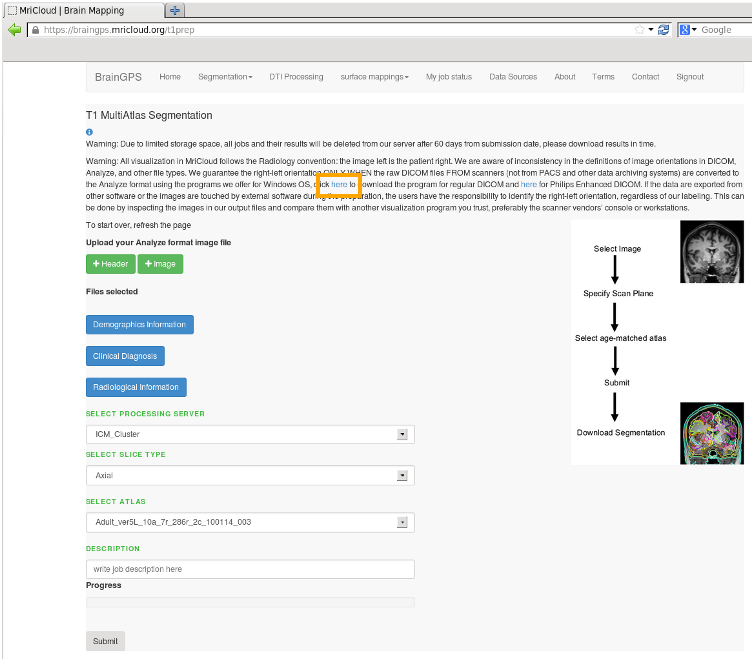
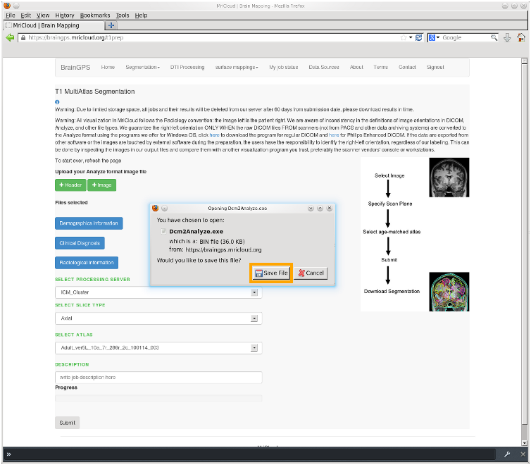
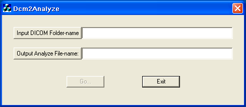
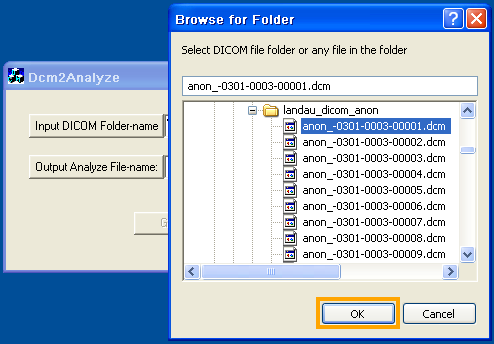
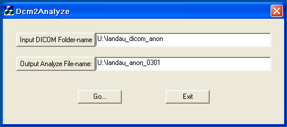
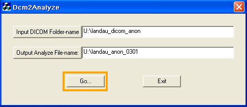
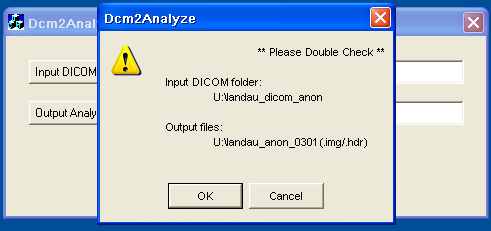
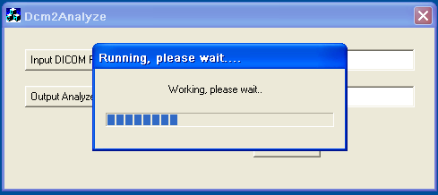

| Step 1 Dcm2analyze is a Windows executable file that is available for download using the web link highlighted in orange on the T1 Segmentation page shown at right Select the web link |
 |
| Step 2 A dialog is displayed providing the ablity to save the file Select the Save File push button and store to Windows directory |
 |
| Step 3 Run the Dcm2Analyze.exe file. The dialog shown at right is displayed. |
 |
| Step 4 Select the Input DICOM Folder-name push button. A dialog will open enabling you to select the directory containing the DICOM files After navigating to the desired directory press the OK push button. |
 |
| Step 5 The Input Folder-name is displayed Use the Output Analyze File-name push button to enter desired file name (as above) or type file name in text edit box. |
 |
| Step 6 Initiate file conversion by selecting the Go push button |
 |
| Step 7 A dialog is displayed prompting user to confirm input folder and output file names. Select OK to proceed |
 |
| Step 8 A dialog with progress bar shows file conversion progress. After this step the Dicom has been converted to Analyze format, and is ready for segmentation using the T1-Segmentation pipeline |
 |